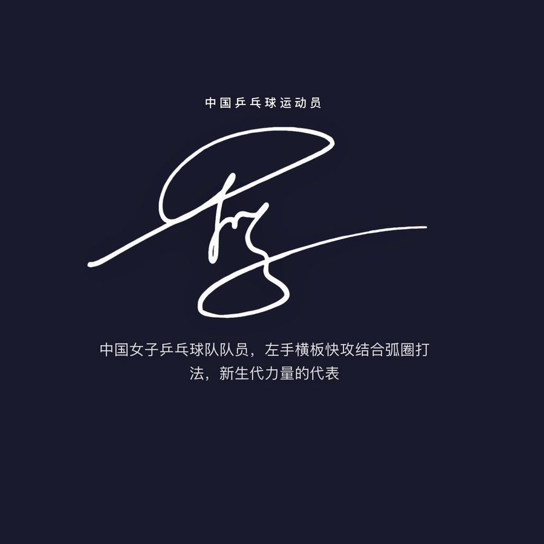

A LITTLE CORNER OF THE INTERNET
你好，我是黄政铭东南大学
平时写点网页和小工具，
也为自己喜欢的事物做点东西。
这里是它们待的地方，欢迎你来。
一些作品SELECTED WORK
01
个人项目 / 专题网站
蒯曼 Kuai Man 专题站
记录赛场上的每一次闪光。赛事回顾、世界排名、荣誉成就，还有采访访谈与球迷作品。
更多小小的想法，正在慢慢发生
A LITTLE CORNER OF THE INTERNET
你好，我是黄政铭东南大学
平时写点网页和小工具，
也为自己喜欢的事物做点东西。
这里是它们待的地方，欢迎你来。

记录赛场上的每一次闪光。赛事回顾、世界排名、荣誉成就，还有采访访谈与球迷作品。
更多小小的想法，正在慢慢发生